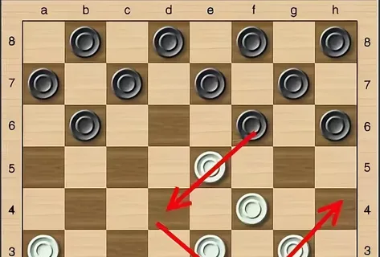

Классический вариант игры в шашки используется во всех соревнованиях, которые проводятся под эгидой международной федерации, в том числе и чемпионате мира. Как уже говорилось, в классических шашках для игры используется доска из 100 клеток – 10х10. Количество фигур – по 24 с каждой стороны, расположенные на клетках одинаковых цветов. Игроки поочерёдно двигают шашки по диагонали вперёд по полям той же расцветки. Бой фигур противника осуществляется через клетку, на которой стоит эта фигура, на пустое поле позади неё.
